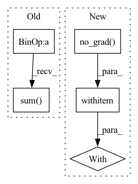

Pattern ID :8804
Before Change
mask = x.abs() > 0.0
num_elements = mask.sum(dim=2, keepdim=True).detach()
x_mean = x.sum(dim=2, keepdim=True).detach() / num_elements
numerator = (x - x_mean).pow(2).sum(dim=2, keepdim=True) .detach()
x_std = (numerator / num_elements).sqrt()
// make sure x_std is not zero
x_std += self.div_guardAfter Change
// https://github.com/pytorch/pytorch/issues/45208
// https://github.com/pytorch/pytorch/issues/44768
with torch .no_grad():
mask = x.abs() > 0.0
return normalize_tensor(x, mask, div_guard=self.div_guard)
In pattern: SUPERPATTERN
Frequency: 3
Non-data size: 5
Instances Fragment ID: 32474303
Project Name: scart97/thunder-speech
Commit Name: 03fe277cc84be5cbcd6ee18db71068cb291c505f
Time: 2021-11-30
Author: scart.lucas@gmail.com
File Name: src/thunder/quartznet/transform.py
M Class Name: FeatureBatchNormalizer
N Class Name: FeatureBatchNormalizer
M Method Name: forward(2)
N Method Name: forward(2)
M Parent Class: nn.Module
N Parent Class: nn.Module
M File Name: src/thunder/quartznet/transform.py
N File Name: src/thunder/quartznet/transform.py
M Start Line: 76
M End Line: 84
N Start Line: 77
N End Line: 81
Before Change
// get per-coordinate sum of edges endpoints of each panel
// should be close to sum of the equvalent number of pading values (since all of coords are shifted due to normalization\standardization)
// (in case of panels, padding for edge coords should be zero, but I"m using a more generic solution here JIC)
panel_coords_sum = (predicted_panels[el_id][:seq_len, :2] - self.pad_tenzor[:2]).sum(axis=0)
// batch mean of squared norms of per-panel final points:
return F.mse_loss(predicted_panels, chosen_panels)After Change
chosen_panels = []
// choose the closest version of original panel for each predicted panel
with torch .no_grad():
for el_id in range(predicted_panels.shape[0]):
num_edges = panel_len_from_padded(gt_panels[el_id], empty_template=self.empty_panel_template)
// all rotations of GT Fragment ID: 32474302
Project Name: maria-korosteleva/garment-pattern-estimation
Commit Name: d5249e2d1149a36a28f875d31d10930c53b178d0
Time: 2021-04-13
Author: mariako@kaist.ac.kr
File Name: nn/metrics.py
M Class Name: PanelShapeOriginAgnosticLoss
N Class Name: PanelShapeOriginAgnosticLoss
M Method Name: __call__(3)
N Method Name: __call__(3)
M Parent Class: PanelLoopLoss
N Parent Class: PanelLoopLoss
M File Name: nn/metrics.py
N File Name: nn/metrics.py
M Start Line: 229
M End Line: 245
N Start Line: 228
N End Line: 261
Before Change
val_baseline = (probs * vals).sum(1, keepdim=True)
// vals = A(s, a) = Q(s, a) - V(s)
vals -= val_baseline
actor_loss = (probs * (log_alpha.exp() * log_probs - vals)).sum( 1) .mean()
else:
a = a_dist.rsample()
if not use_baseline:After Change
if discrete:
probs = a_dist.probs
log_probs = torch.log_softmax(a_dist.logits, dim=1)
with torch .no_grad():
vals = torch.stack([q(s_rep) for q in agent.critics], dim=0).min(0).values
vals = (probs * vals).sum(1, keepdim=True)
entropy_bonus = log_alpha.exp() * (probs * log_probs).sum(1, keepdim=True)
else: Fragment ID: 32474301
Project Name: jakegrigsby/super_sac
Commit Name: 59feb0087b573d3c49f8443c5b5758b0f192ca3b
Time: 2021-10-04
Author: jcg6dn@virginia.edu
File Name: uafbc/learning.py
M Class Name: AnonimousClass
N Class Name: AnonimousClass
M Method Name: online_actor_update(11)
N Method Name: online_actor_update(11)
M Parent Class:
N Parent Class:
M File Name: uafbc/learning.py
N File Name: uafbc/learning.py
M Start Line: 219
M End Line: 238
N Start Line: 219
N End Line: 236